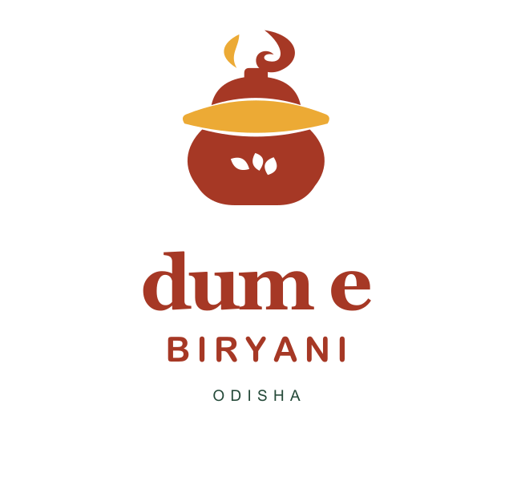
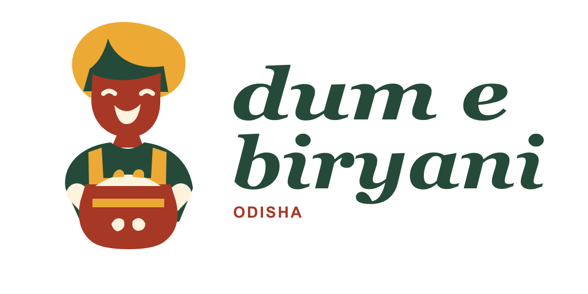
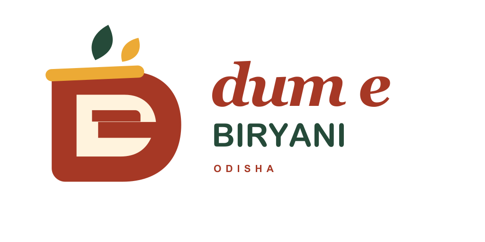
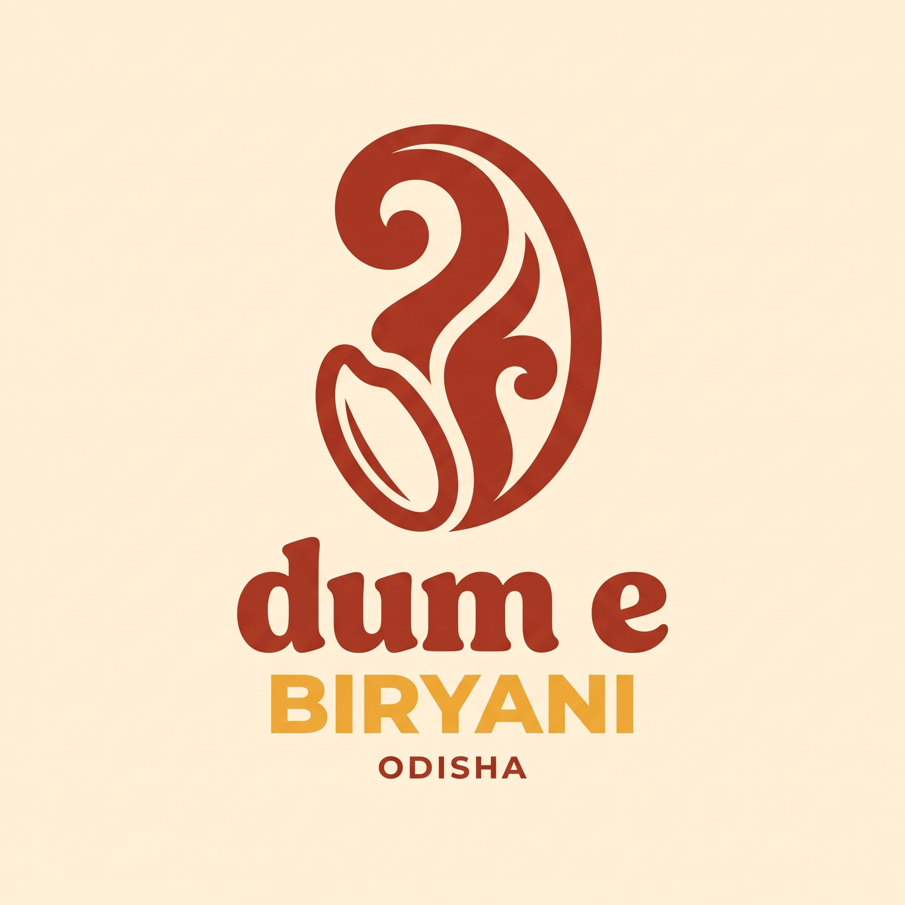
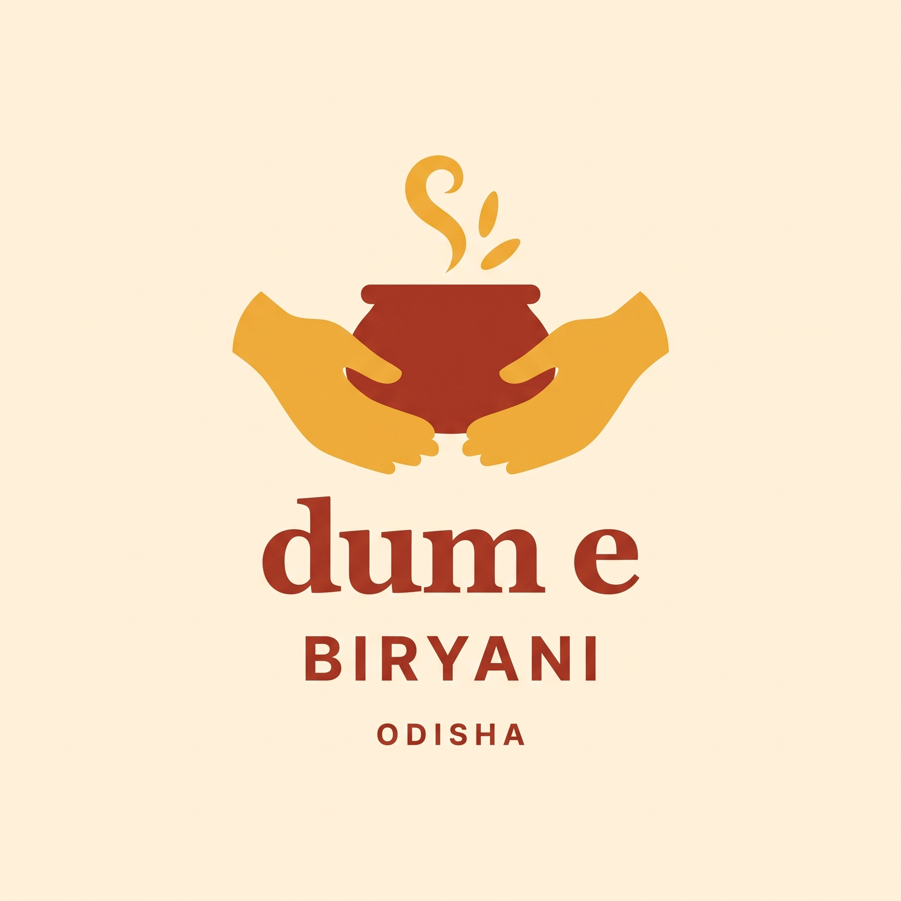
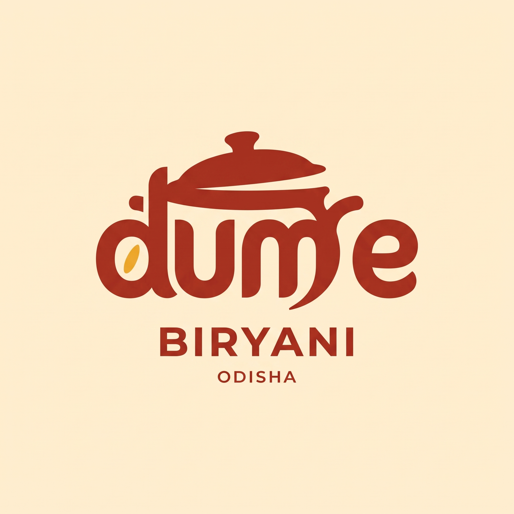
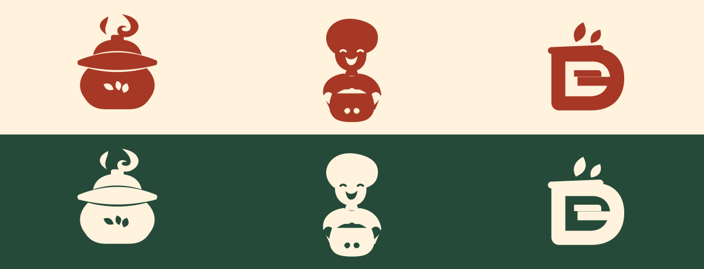
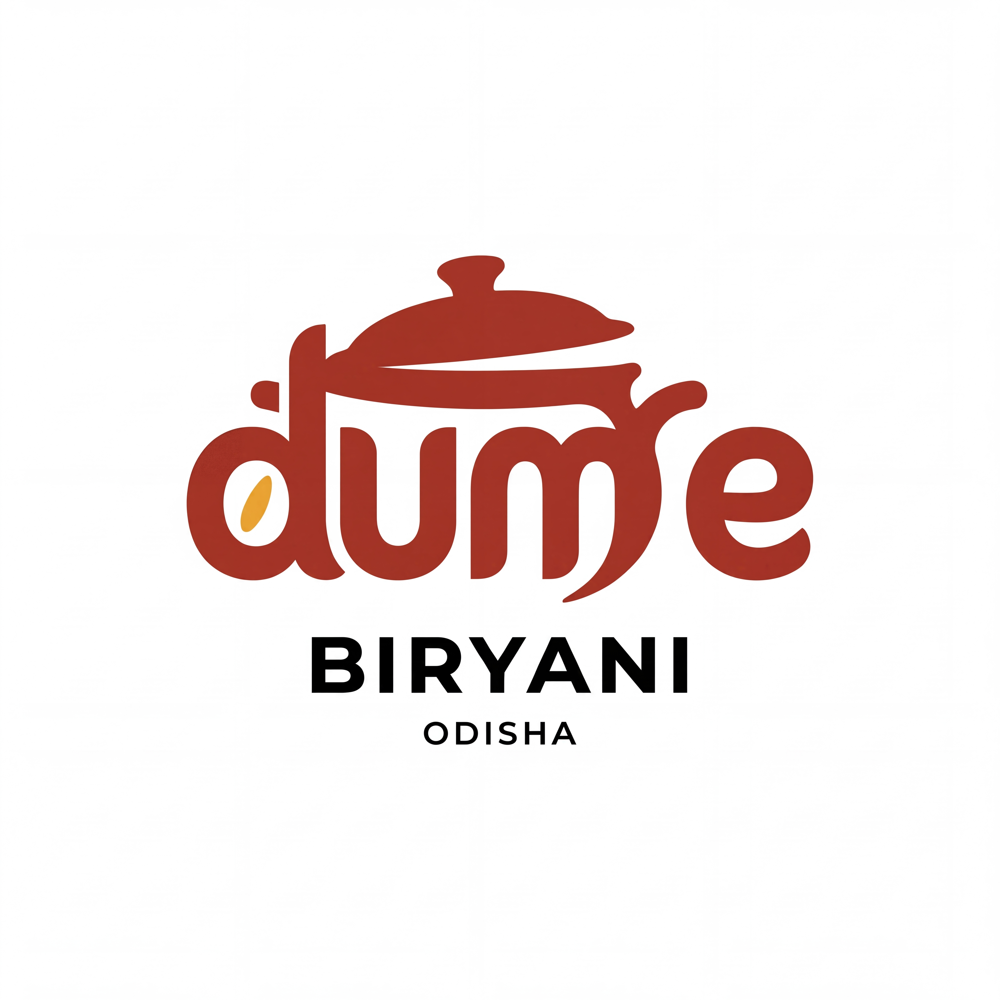
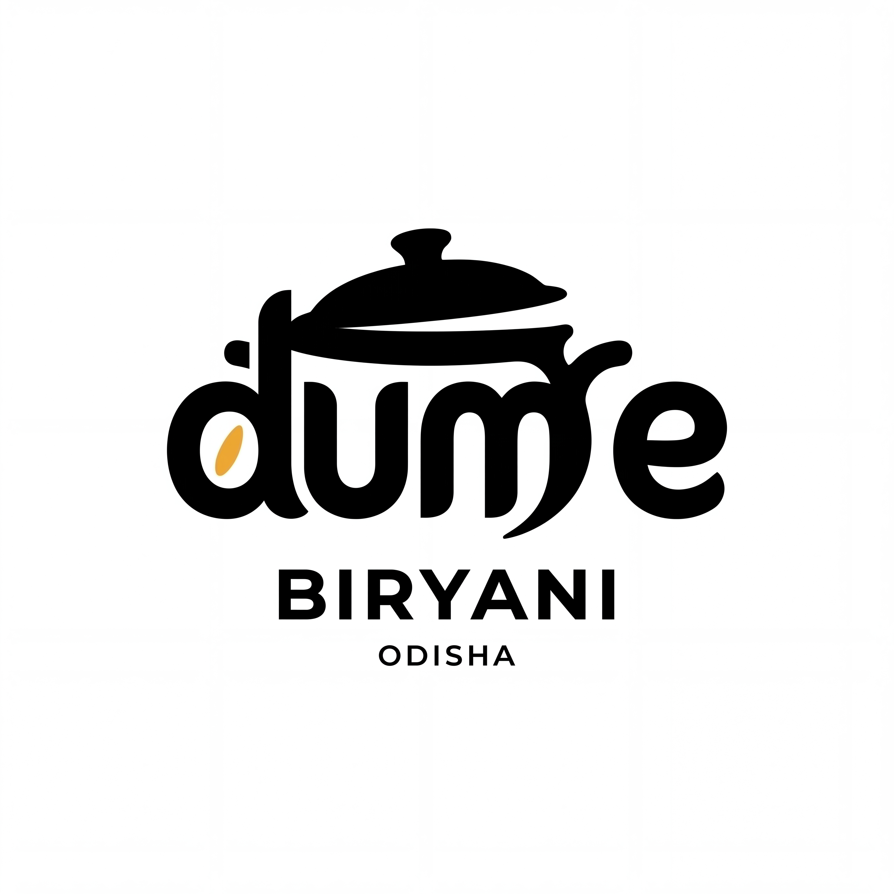
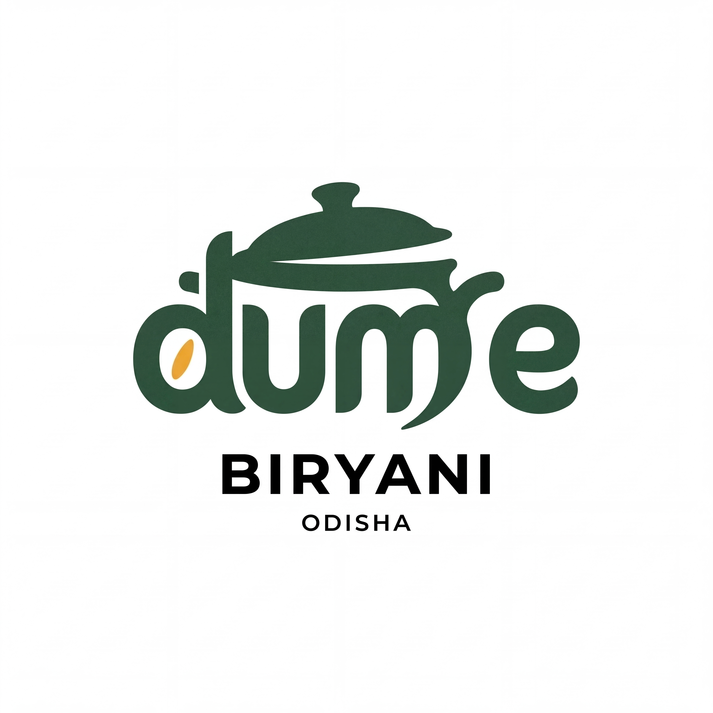

Historical archive — earlier design roundsThe current brand name is Dum E Odisha. Some early artwork below contains the former naming assumption; later rounds use the corrected name. All are retained for reference. Open the current guides for the latest illustrative concepts.
Open the current Dum E Odisha guides → Brand and design historyAll six early logo directions, their brand strategy and palette, plus the five earlier selected-logo treatments are preserved here. Recommendations on this page describe earlier rounds; the current guide records the latest work.
Revision 09 — first wall and banner examples
The earlier collection had application sets for concepts 11–13. Revision 10 extends walls and banners to every identity.
Open the earlier collectionRevision 08 — the ten-concept collection
The ten directions are retained unchanged as visual identities. Revision 09 adds three earlier reference directions and nine application scenes.
Open the previous ten-guide collectionRevision 06 — type-led direction, superseded
Preserved after the request for a more illustrative identity.
Revision 05 — previous joined wordmark
The corrected Dum E Odisha name was present, but the lowercase Dum/E junction remained unclear. Preserved as an earlier design, superseded by revision 06.
DUM E BIRYANI · ODISHA · BRAND GUIDE · ROUND 02
Authentic flavour.
A warm welcome.
Proposed identity for a biryani specialist offering authentic biryani in different flavours and varieties.
Recommended new direction: 04 — The Aroma Paisley. A rice-grain and aroma emblem with warm, rounded lettering. Compare it with 01 — The Aroma Handi for a clearer food cue, or 06 — The Dum Club for a bolder wordmark.
Six directions: three editable SVG studies and three new Nano Banana image concepts. The same warm identity anchors every route.
Showing all 6 concepts
01The Aroma Handi

A rounded handi with a curling aroma plume.
Best fit: warm, inviting and clearly biryani.
Rice details soften below 32 px; simplify for tiny use.
Download concept SVG02The Dum Host

A cheerful host serving a generous pot.
Best fit: hospitality and a friendly personality.
Character detail needs more space; use at 48 px or larger.
Download concept SVG03The Dum Seal

A sealed vessel combining the letters D and e.
Best fit: bold avatars, stickers and packaging.
More abstract; the name must accompany it initially.
Download concept SVG04 / NANO BANANAThe Aroma Paisley

A rice grain and curling aroma become a bold paisley emblem.
Recommended new direction: expressive, warm and culturally familiar.
Refine the inner curls for small sizes; use dark lettering instead of saffron for small descriptors.
Download 2048 px concept PNG05 / NANO BANANAThe Shared Handi

Two welcoming hands cradle a biryani handi.
Most welcoming direction: generosity, serving and shared meals.
Needs a simplified one-colour cut; the hands and pot can merge at small sizes.
Download 2048 px concept PNG06 / NANO BANANAThe Dum Club

A cooking lid and rice accent are integrated into bold lettering.
Strongest type-led option for signs, labels and social posts.
The lid-to-letter junction and m need refinement for faster reading.
Download 2048 px concept PNG Brand definition
Positioning: A welcoming biryani specialist in Odisha, bringing authentic flavour and variety to everyday cravings and shared meals.
Personality: Warm, flavourful, confident, generous and contemporary.
Proposed promise: “Authentic biryani. A flavour for every craving.”
Short tagline option: “Many flavours. One love.”
Voice: Simple, inviting and appetite-led. Example: “Find your favourite. Share a handi.” Avoid unsupported recipe, sourcing, heritage or cooking-time claims.
Audience assumption: Local biryani lovers, including young adults, families and people ordering meals to share. Audience and sales channels remain unverified.
Name assumption: Dum E Biryani is the master brand; Odisha is the location signature. Your brief also says Dum E Odisha, so confirm the intended public-facing name before finalising lettering.
Proposed colour and type direction
Chilli · #A63825
Saffron · #ECAA35
Rice cream · #FFF3DD
Leaf green · #254A39
Use cream as the main field, chilli for recognition, saffron as a small accent and green for supporting text. Flat fills throughout.
The original SVG logo studies use outlined Georgia Bold / Bold Italic with Arial Rounded Bold or Arial for descriptors. The Nano Banana studies include generated lettering; no exact font family is claimed for these. Their chosen lettering should be reconstructed as clean paths before a final logo master. Font files are not redistributed. The chosen wordmark can receive further optical refinement after selection. Supporting typography direction: a warm display serif with a clear sans-serif for menus.
Reference interpretation
Your screenshots suggest expressive wordmarks, compact distinctive symbols and selective illustration. We borrowed those design principles rather than copying their logos. The portrait direction echoes the warmth of illustrative marks; the other two use food and letterform ideas.
The Instagram URL could not be read through the available web access. No existing colours, menu details, address or claims have been assumed from it.
Scale and one-colour checks

These are concept proofs. The host loses costume separation in one colour and needs a simplified cut for tiny applications. The Aroma Handi and Dum Seal preserve their main silhouettes; their smallest decorative details will need refinement before a final icon export. Full names belong on larger layouts, not 16 px favicons.
Using the identity
Instagram and social posts
Use a symbol-only profile image once the chosen direction has a clean icon cut. Keep the full name on introductory posts. Use cream fields, dark headings and a small saffron accent; show biryani photos in a separate content area.
Packaging and stickers
Use the full logo on the main label and a one-colour symbol for a small lid sticker. Keep flavour names and order details separate from the logo. Rich chilli colour provides a strong repeated brand cue.
Menus and signs
Set dish names in a clear sans-serif. Give prices a consistent alignment. Use the logo with generous breathing room on signs and avoid placing it over busy food photography.
Proposed clear space: Reserve at least the height of the lowercase e on every side of the full logo. For a symbol alone, reserve one quarter of its width. Lock these dimensions after the selected artwork is refined.
Working minimum: Present the full-logo PNG concepts at 240 px wide or larger; these are review sizes, not a certified minimum. Tiny avatars require a separate simplified symbol. Keep Odisha optional when the location signature becomes too small to read.
Maintain: Original proportions, the chosen colour scheme, readable lettering and a flat appearance. Avoid stretching, shadows, glows, added borders or swapping typefaces within a lockup.
Files and production status
01–03 are editable vector SVG studies with outlined lettering. 04–06 are Nano Banana PNG images at 2048 × 2048 pixels with cream backgrounds. They are not transparent vector masters; generated colour and edge texture are approximate.
The new studies were visually checked for the brand spelling and composition. Each reads dum e / BIRYANI / ODISHA. The original SVG studies retain their existing one-colour proofs. The new concepts still need vector reconstruction, flat colour correction, small-size simplification and one-colour validation before final print production.
Next decision
Select a direction from 01–06, or identify parts to combine. Confirm whether the main name should be Dum E Biryani or Dum E Odisha. These are original exploration files, not an approved production kit.
The selected direction can be refined into consistent horizontal and stacked logos, transparent PNGs, monochrome versions and a profile icon. This guide records the proposed brand system while the logo options remain open.
Earlier selected-logo colour treatments
The five treatments below are preserved from the first selected-logo colour round, including the original chilli, black-and-saffron and green versions. The current guide explores more colour across the lid and lettering.
Primary treatment
Chilli + saffron

Warm chilli wordmark, saffron rice grain, black descriptors and a white field. Recommended for the main logo.
Download 4096 × 4096 JPEGCompact colour treatment
Black + saffron

Black lettering with a single saffron accent. Use when a restrained black-and-white composition needs a little warmth.
Download 4096 × 4096 JPEGOptional alternate
Leaf green + saffron

A deep green wordmark with a saffron accent. Keep this as an alternate study until a single colour route is locked.
Download 4096 × 4096 JPEGSingle-colour treatment
Black on white

All logo elements use black. Suits simple monochrome layouts and one-colour print artwork after production preparation.
Download 4096 × 4096 JPEGReverse treatment
White on black

All logo elements use white on a black field. Use for dark backgrounds with enough space around the full lockup.
Download 4096 × 4096 JPEGPrevious multicolour round — superseded naming
These three colour studies preserve the earlier Biryani / Odisha hierarchy. They are historical references, not the current brand name.
Recommended multicolour treatment
Saffron lid + chilli lettering

A saffron lid and rice grain, chilli wordmark and black descriptors. Colour now covers the pot lid as well as the lettering.
Download 4096 × 4096 JPEGThree-colour alternate
Chilli lid + leaf-green lettering

A chilli lid, leaf-green lettering and descriptors, and a saffron rice grain. The two large forms use contrasting colours.
Download 4096 × 4096 JPEGBlack with warm colours
Chilli lid + black lettering

A chilli lid and BIRYANI descriptor, black wordmark, and saffron rice grain. Warm colours occupy visible parts of the identity.
Download 4096 × 4096 JPEGSkill sources and process
rknall/claude-skills · neonwatty/logo-designer-skill · kaankiziltug/logo-design-skill · rampstackco/claude-skills · luongnv89/skills · daffy0208/ai-dev-standards · oakoss/agent-skills
Applied shared principles: brief first, multiple distinct concepts, SVG geometry, flat fills, outlined lettering, one-colour and size proofs, brand palette and typography. The software-specific sync/default-neon workflow does not match this new food-brand brief; the reference skill's fast track and concept checkpoint guide this round.
Longlist: aroma handi; dum host; DE seal; rice-grain paisley; serving-hand mark; layered-rice monogram; spice sun; sealed-lid wordmark; shared-handi emblem. The first three were selected for clarity, relevance and useful applications. Round 02 adds Aroma Paisley, Shared Handi and Dum Club through Nano Banana MCP (Gemini 3.1 Flash Image, 2K), using both supplied screenshots and the existing concept board as inspiration. Read the exact generation prompts.